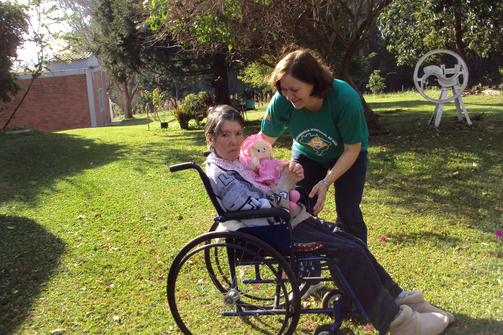
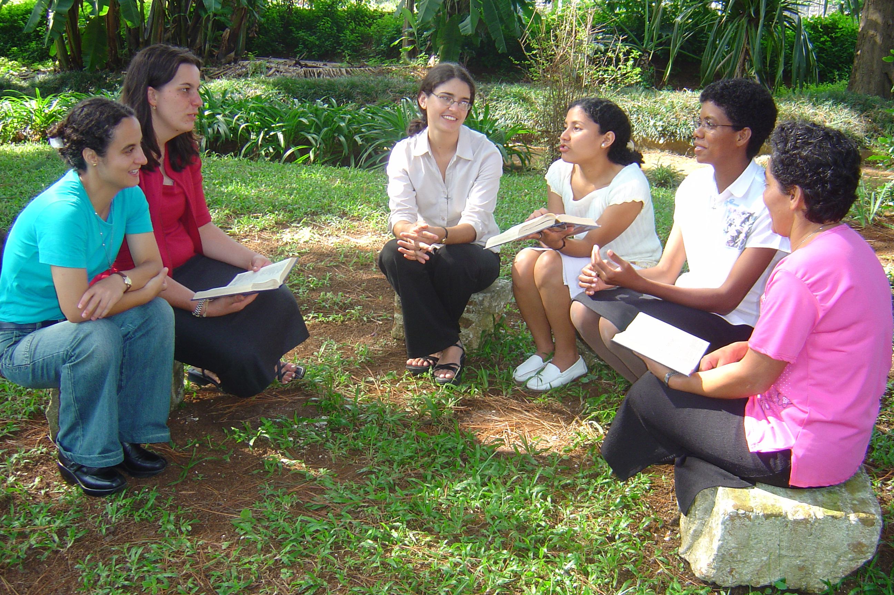

Hoje lembramos o Santo Cura D’Ars, o patrono dos párocos, que ficou conhecido em toda França pela
contribuição que deu às pessoas vindas de perto e de longe para a confissão. Celebramos o Dia do
Padre

Dai-me, Senhor, um Coração Missionãrio
7° de Agosto de 2020
A transfiguração de Jesus foi uma experiência extraordinária que reforçou a fé dos discípulos em
Cristo. Hoje também somos chamados a nos transformar em pessoas melhores e mais solidárias, seguindo
o exemplo de Jesus

Oração Vocacional por intercessão de Madre Maria
14° de Agosto de 2020
Hoje a Igreja celebra Santa Teresa Benedita da Cruz (Edith Stein), grande filósofa e mística que
soube buscar sempre a verdade e o amor. Em sua rica vida, temos uma síntese do drama humano que
ainda necessita ser sarado. Que ela rogue por nós!
Oração pelas Vocações Missionárias
21° de Agosto de 2020
Santa Clara nos inspira a ter uma vida de despojamento dos bens materiais,
seguindo o Cristo pobre. Junto com São Francisco, fundou a ordem das clarissas e é a patrona da
televisão por causa de uma visão que teve. Padre.
Oração pela Missão
28° de Agosto de 2020
São Maximiliano é um santo atual que deu a vida num campo de concentração nazista. Ele foi capaz de
sensibilizar-se com o sofrimento do outro, oferecendo a própria vida para morrer no lugar de um pai
de família.